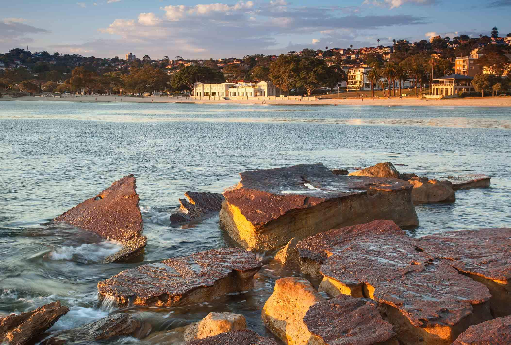
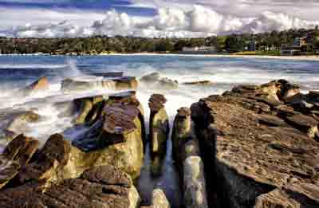
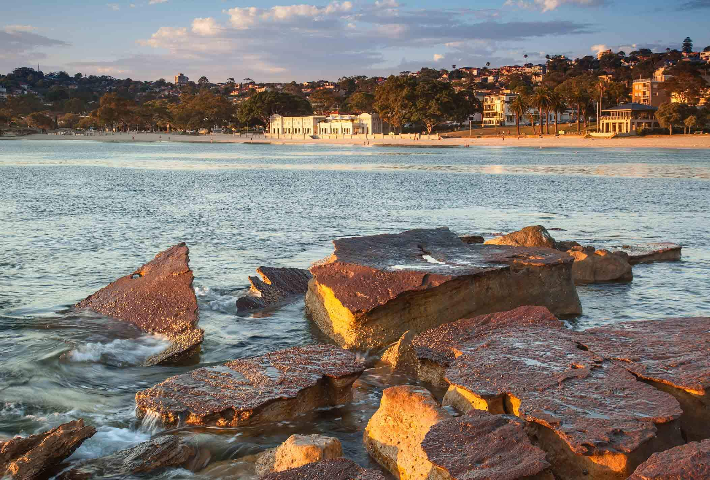
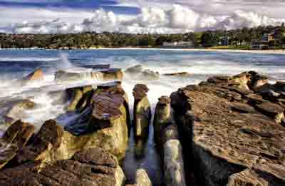
 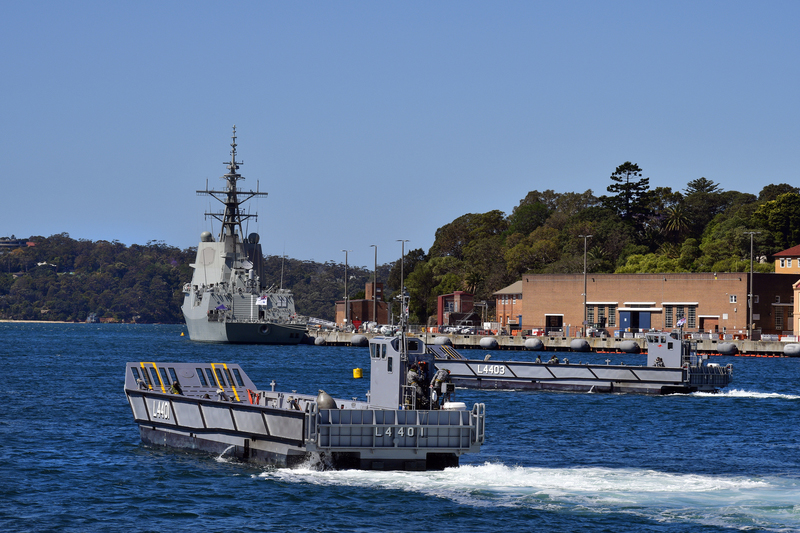
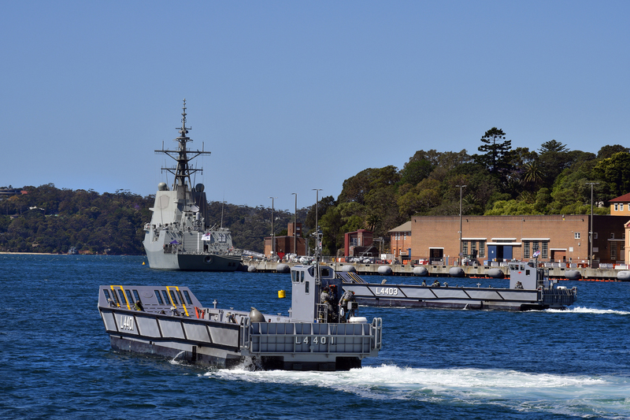
 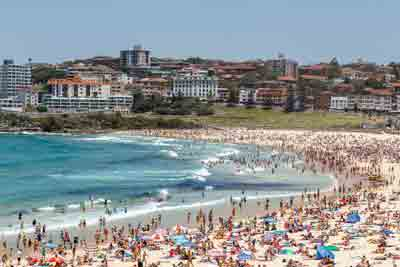
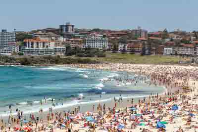

This is a half day that maximises time and highlights Sydney’s iconic and picturesque locations.
After city hotel pick up, we journey straight to where Australia’s colonial history began and get some photo opportunities around the harbour.
We then venture to the Botanical Gardens, Lady Macquarie’s Chair and the ever-evolving suburbs of Woolloomooloo and Kings Cross. Following the harbour, we journey through the city’s eastern bays out to south head. We are then off to iconic Bondi Beach and return to the city via fashionable Oxford Street, Paddington.
Guests are picked up from their city hotel at 8am and returned at 12 midday or picked up at 1pm and returned at 5pm. (Guests have options regarding return if an alternative drop off is possible.)
| Pricing: | |
|---|---|
| Up to 4 people | $520 |
| Up to 6 people | $660 |
| Up to 8 people | $800 |
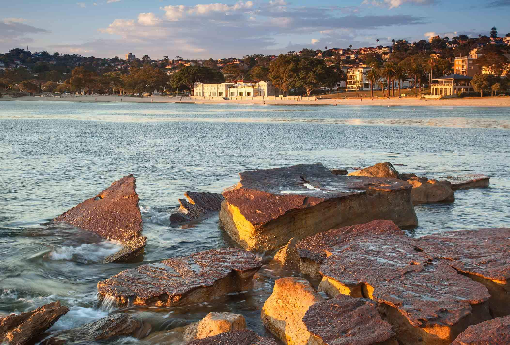
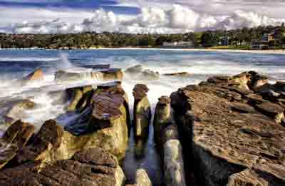
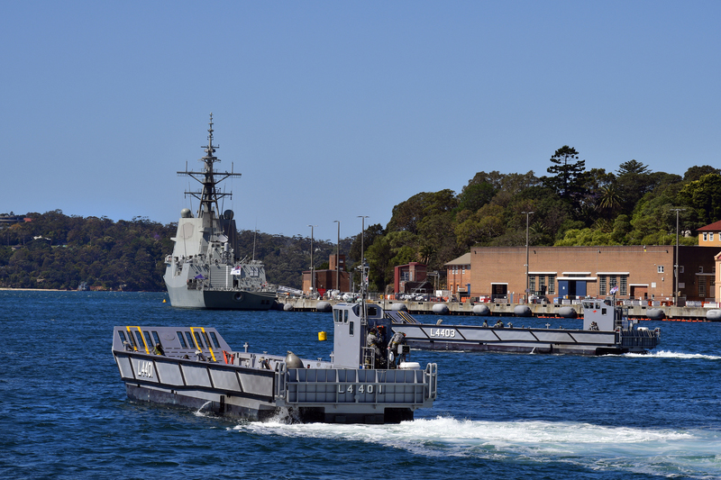
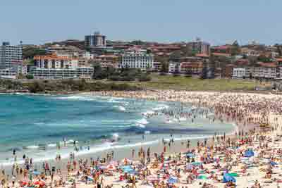
The city of Sydney is regarded as one of the most picturesque cities in the world. Its streets and surrounding suburbs are full of history that have created a vibrant, cosmopolitan and friendly locale that welcomes international visitors.
After city hotel pick up, we journey straight to where Australia’s colonial history began. A short walk on the Sydney Harbour Bridge and up into the southern pylon for some spectacular 360-degree views. We then venture to the Botanical Gardens, Mrs Macquarie’s Chair and the ever-evolving suburbs of Woolloomooloo and Kings Cross. Following the harbour, we journey through the city’s eastern bays out to south head. After a waterside lunch it is off to iconic Bondi Beach for a stroll on the promenade. We return to the city via fashionable Oxford Street, Paddington.
Guests are picked up from their city hotel at 9am and returned at 4.30pm (subject to any additional tours).
| Pricing: | |
|---|---|
| Up to 4 people | $720 |
| Up to 6 people | $900 |
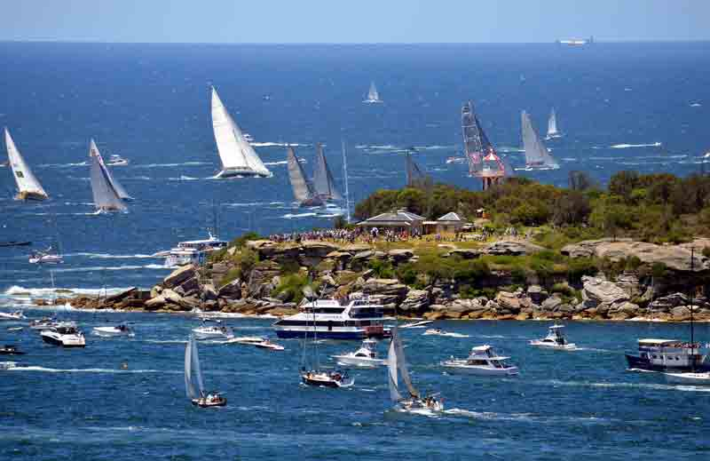


This private tour captures the diverse make up of northern Sydney as guests view and experience the beauty of its harbour and coastal beaches, as well as the raw uniqueness of Australian bushland in a protected national park.
The tour begins with a visit to North Head and vibrant Manly. We then track the coastline to Long Reef Beach where we take a shoreline walk before continuing to Mona Vale Beach and lunch by the waterside.
Then it is time to head inland to Kuringai National Park where we visit West Head lookout and take a short bushwalk to Aboriginal engraving sites.
We return via upmarket Mosman and Balmoral Beach before heading back to Manly or over the Harbour Bridge to your city hotel.
Guests are picked up from Manly Wharf at 9am and returned at 5pm.